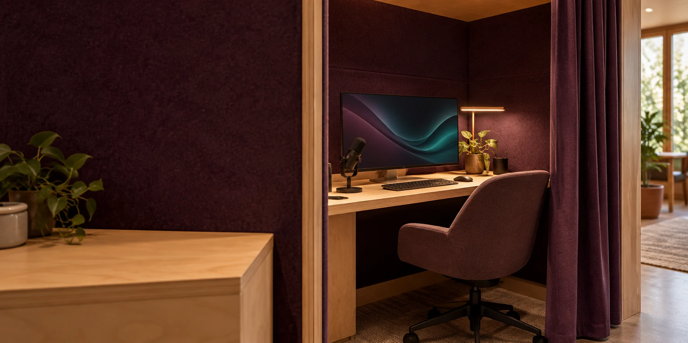

01 / INSIDE THE VERSE BOX
Choose your
own adventure.
A first visit could begin with an everyday question and end with something you can take forward.
Bring something that matters to you.
Explore an interest.
A host could help you work on a skill, creative idea, travel plan, business question or local issue. Demonstrations would use sample records.
Inspect the result.
Review the inputs and sources, correct errors and decide what to keep. A result might be a sourced explanation, creative work or draft community proposal.
Continue in your own space.
A web address or QR code would help you return on your device. The proposed application would need its own tested handover and export process.
Follow your curiosity.
Learn, practise and make
Compare explanations, rehearse a skill, work with sound and images, or recover the context of an earlier project.
Explore places and plans
Use maps, compare possible journeys, plan a room or garden, and examine the assumptions behind a simulated change.
Body reference and avatar
Optional measurements and images could support a digital representation. Each model would identify measured dimensions, software estimates, accuracy and access conditions.
Understand a public question
Find the responsible organisation, compare options and prepare questions or a submission with sources.
Simple materials. Considered details.
The concept combines a braced portable structure, suitable second-hand computers, a display, task lighting and equipment chosen for the activities offered. Cameras, microphones or measuring tools would be added only for agreed purposes.
Before public use, the design would need completed stability, assembly, access and equipment checks. Any recording would have a visible state, a clear purpose and an agreed way to stop.